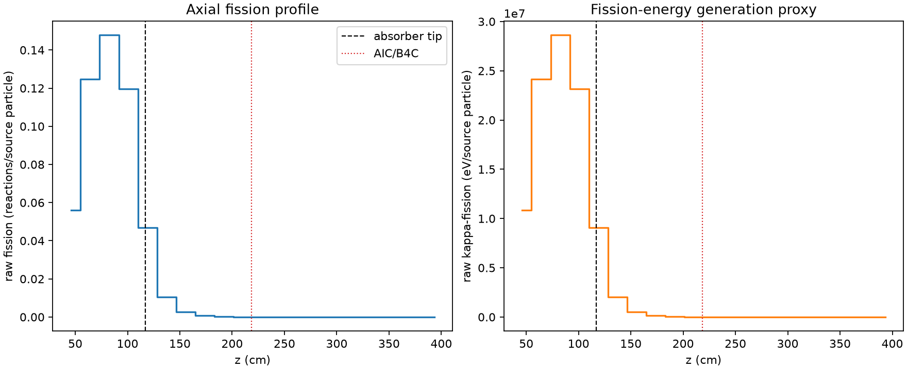
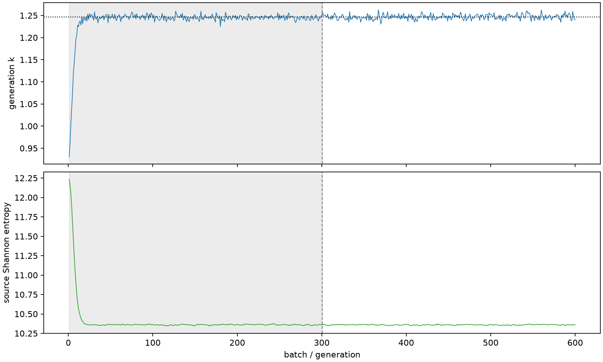

| field | value |
|---|---|
| experiment | V2-STAGE_32_OGRENCI_02-0001 |
| k | 1.2464285154621648 |
| MC standard error | 0.0001794186136648504 |
| seconds | 1138.3144952090001 |
| acceptance | not_assessed |
| convergence | review_required |
Completed is output integrity only; physical and statistical review required. Zero tallies do not prove zero production or zero uncertainty.
| diagnostic | value |
|---|---|
| geometric fuel voxels | 5280 |
| zero fission tally voxels | 1748 |
| low signal fuel voxels | 2858 |
| low signal fission share | 0.00012272591624156687 |
| low signal kappa share | 0.00012276765373246765 |
| important fission share | 0.9501279747937275 |
| previous filter included | 2422 |
| duration estimate s | 1562.5173488400023 |
| actual minus estimate s | -424.2028536310022 |
| fission relative MC error | statistics |
|---|---|
| all_geometric_fuel | {"voxels": 5280, "positive_mean_voxels": 3532, "zero_mean_voxels": 1748, "undefined_relative_error_voxels": 1748, "median": 0.03311744314006912, "p95": 0.9556115184514806, "maximum": 1.0000000000000002} |
| low_signal | {"voxels": 2858, "positive_mean_voxels": 1110, "zero_mean_voxels": 1748, "undefined_relative_error_voxels": 1748, "median": 0.5468789830759708, "p95": 1.0, "maximum": 1.0000000000000002} |
| important_95pct | {"voxels": 1255, "positive_mean_voxels": 1255, "zero_mean_voxels": 0, "undefined_relative_error_voxels": 0, "median": 0.005265628675192332, "p95": 0.008381799737277084, "maximum": 0.009659968359641925} |
| outside_previous_filter | {"voxels": 2858, "positive_mean_voxels": 1110, "zero_mean_voxels": 1748, "undefined_relative_error_voxels": 1748, "median": 0.5468789830759708, "p95": 1.0, "maximum": 1.0000000000000002} |
| kappa_fission relative MC error | statistics |
|---|---|
| all_geometric_fuel | {"voxels": 5280, "positive_mean_voxels": 3532, "zero_mean_voxels": 1748, "undefined_relative_error_voxels": 1748, "median": 0.033075716343756514, "p95": 0.9560622423207799, "maximum": 1.0000000000000002} |
| low_signal | {"voxels": 2858, "positive_mean_voxels": 1110, "zero_mean_voxels": 1748, "undefined_relative_error_voxels": 1748, "median": 0.545804304486195, "p95": 1.0, "maximum": 1.0000000000000002} |
| important_95pct | {"voxels": 1255, "positive_mean_voxels": 1255, "zero_mean_voxels": 0, "undefined_relative_error_voxels": 0, "median": 0.005259976320999894, "p95": 0.008371579232075717, "maximum": 0.009649325627633218} |
| outside_previous_filter | {"voxels": 2858, "positive_mean_voxels": 1110, "zero_mean_voxels": 1748, "undefined_relative_error_voxels": 1748, "median": 0.545804304486195, "p95": 1.0, "maximum": 1.0000000000000002} |
| axial bin | fission share | kappa-fission share |
|---|---|---|
| 1 | 0.10992979360033861 | 0.10993168294665268 |
| 2 | 0.2449945371316657 | 0.24498799154978704 |
| 3 | 0.2902413182384009 | 0.29023372887722476 |
| 4 | 0.23469077779712297 | 0.23468490799322464 |
| 5 | 0.09215160644303134 | 0.09216129695592709 |
| 6 | 0.02063869028892377 | 0.020644825008101716 |
| 7 | 0.0054194148521697245 | 0.005421079747340583 |
| 8 | 0.0014138772799213752 | 0.001414329676749054 |
| 9 | 0.0003792863642423387 | 0.00037940909382544246 |
| 10 | 0.00010535373482194413 | 0.00010538784201840763 |
| 11 | 2.460031700361524e-05 | 2.4612534073485595e-05 |
| 12 | 8.215002601713543e-06 | 8.217745872567488e-06 |
| 13 | 2.002755478210894e-06 | 2.003739333169969e-06 |
| 14 | 5.181842598590136e-07 | 5.182888876346048e-07 |
| 15 | 8.010017852706873e-09 | 8.000981842294267e-09 |
| 16 | 0.0 | 0.0 |
| 17 | 0.0 | 0.0 |
| 18 | 0.0 | 0.0 |
| 19 | 0.0 | 0.0 |
| 20 | 0.0 | 0.0 |
Histories include the inactive-to-active transition at batch 300. kappa-fission approximates fission energy production, not total heat deposition.

